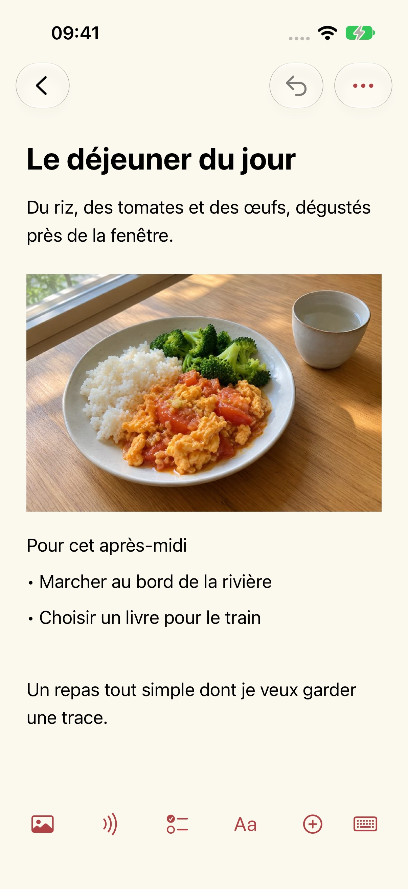
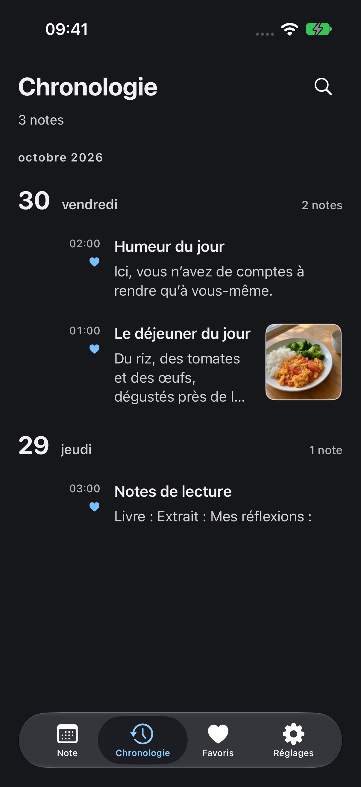

Aide et assistance
Mise à jour : 2026-10-29
Pourquoi j’ai créé Mowyns
Je cherchais un outil de prise de notes simple, agréable et entièrement gratuit. Après de longues recherches, je n’avais toujours rien trouvé qui me convienne. J’ai donc créé Mowyns, que j’utilise moi-même au quotidien.
Une page pour aujourd’hui
Je voulais ouvrir mon carnet et y trouver la journée d’aujourd’hui. Le calendrier affiche les notes d’une date à la fois : celles d’hier restent à hier. Pour revenir en arrière, choisissez une date ou parcourez la chronologie. Vos anciens souvenirs sont toujours là, sans encombrer le présent.




Note
Prenez une photo du déjeuner et ajoutez quelques mots. Notez une envie ou une idée. Texte, photos et enregistrements peuvent cohabiter dans une même note.
Date
Avant un voyage, rangez les informations du train, les numéros de siège, les captures de billets et les lieux à visiter à la bonne date. Le jour venu, ouvrez cette page pour retrouver votre programme. Quelques jours de notes deviennent un itinéraire simple.
Calendrier
En haut de la liste du jour, tirez une fois vers le bas pour afficher le calendrier, puis une seconde fois pour ouvrir la recherche rapide. Lorsque le calendrier est replié, balayez la date à gauche ou à droite pour passer au jour suivant ou précédent.
Apparence
Choisissez une couleur de thème et un mode clair ou sombre. Ajustez la taille du texte et l’interligne selon vos préférences.
Nouvelle note
Choisissez « Nouvelle note », puis saisissez un titre et du texte. La barre d’outils en bas de l’éditeur permet d’ajouter images, audio, listes, tableaux et fichiers.
Sauvegarde et transfert
Les notes sont enregistrées sur cet appareil. Dans Réglages → Gestion des données → Sauvegarde et transfert, vous pouvez exporter ou importer une sauvegarde standard ou chiffrée. Conservez vos propres sauvegardes ; il n’y a pas de synchronisation automatique.
Transcription audio
L’app ne demande l’accès à la caméra ou au micro que lorsque vous prenez une photo, numérisez ou enregistrez. Vous choisissez les photos et fichiers avec les sélecteurs système. Refuser ces autorisations n’empêche pas d’écrire des notes textuelles. La transcription nécessite l’autorisation système de reconnaissance vocale et s’effectue uniquement sur l’appareil. Si l’appareil ou la langue n’est pas pris en charge, l’audio est conservé et la transcription indiquée comme indisponible. L’app ne bascule pas vers une reconnaissance cloud. Vous pouvez révoquer les autorisations dans les réglages système.
Suppressions récentes
Ouvrez Réglages → Gestion des données → Suppressions récentes pour restaurer une note. Après une suppression définitive, il faut une sauvegarde exportée auparavant. Le développeur ne possède pas de copie de vos notes.